Dans cette vidéo, le réalisateur et artiste VFX Jack analyse en profondeur l'outil **Higgsfield Popcorn**, positionné comme un rival direct de *nano banana* de Google dans la course à la cohérence visuelle pour la narration par IA. Conçu pour résoudre le talon d'Achille de la génération vidéo — à savoir la continuité des personnages, des décors, de l'éclairage et du style —, Popcorn s'appuie sur un pipeline multi-images. Il permet aux créateurs de télécharger jusqu'à quatre images de référence, d'associer un prompt textuel et de générer instantanément une séquence de plusieurs plans cinématographiques parfaitement harmonisés, éliminant ainsi l'écueil des visages aléatoires ou des scènes dépareillées qui brisent l'immersion narrative.
La méthode pas à pas démontrée par Jack se divise en deux phases distinctes : l'idéation de storyboard et l'animation finale. Dans un premier temps, l'utilisateur importe une image de référence (qu'elle soit stylisée en mode Studio Ghibli ou ultra-réaliste) dans **Higgsfield Popcorn**, définit le mode automatique ou manuel, choisit le ratio (16:9) et le nombre de résultats (jusqu'à sept images). Une fois les visuels cohérents validés, Jack utilise l'option « animer » pour basculer vers le générateur vidéo de la plateforme, où il sélectionne un modèle de pointe comme **Google VO 3.1** (en mode rapide à 1080p) et applique un prompt de mouvement de caméra ciblé pour donner vie à chaque plan.
Pour les créateurs de contenu, les publicitaires et les cinéastes indépendants, cet outil représente un bond en avant considérable dans les flux de travail professionnels. Il rationalise la pré-production et la production en permettant de prototyper rapidement des scènes complexes — telles qu'un braquage de banque ou une séquence fantastique — tout en préservant l'identité visuelle du sujet (vêtements, accessoires comme l'alliance, traits caractéristiques). Bien que quelques imperfections subsistent (filtrage parfois excessif de contenu sensible ou légères variations de textures textuelles), l'efficacité de Popcorn pour assembler un court-métrage ou une publicité cohérente en un temps record en fait un indispensable absolu.
Nano Banana est peut-être cuit parce que Higgsfield AI vient de lancer Popcorn et ils en ont après la couronne de Google. Imaginez télécharger une seule image, écrire un court prompt et regarder toute une histoire cinématique se générer sous vos yeux. Popcorn utilise un pipeline multi-images pour résoudre le plus grand problème de la narration par IA, la continuité. Fini les visages aléatoires ou les scènes dépareillées, juste des visuels de qualité cinématographique irréprochables qui semblent vraiment cohérents. Je suis Jack, je suis artiste VFX.
Interface & Outils : Présentation vidéo illustrative de Higgsfield AI (Popcorn) avec incrustation PiP du créateur.
Contenu textuel & Code : Texte affiché à l'écran : "higgsfield AI", "as an", "continuity", "consistent".
Action / Démonstration : Démonstration de différentes scènes cinématiques générées par intelligence artificielle illustrant la cohérence des personnages et des décors.
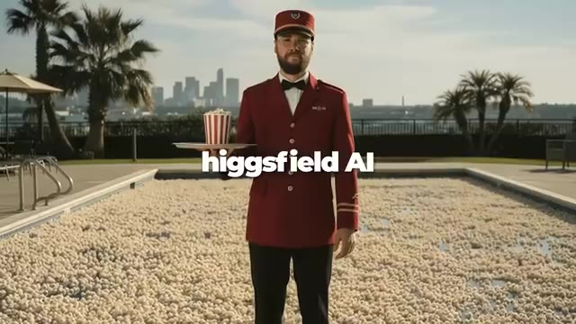
🔍 Agrandir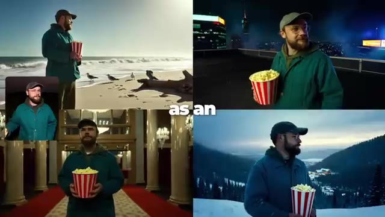
🔍 Agrandir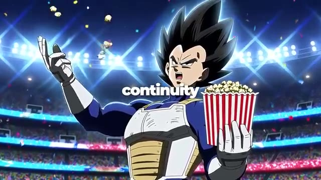
🔍 Agrandir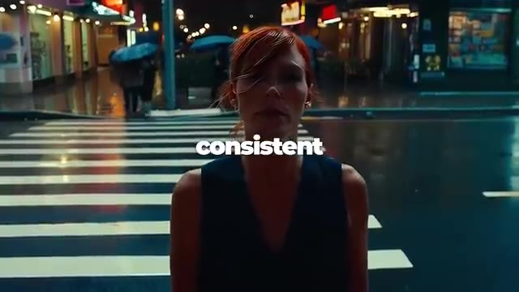
🔍 Agrandirdans l'industrie de la publicité depuis plus d'une décennie maintenant et j'ai travaillé avec beaucoup des plus grandes marques de la planète. Dans cette vidéo, je vais vous montrer exactement comment fonctionne Higgsfield Popcorn et nous découvrirons si c'est l'outil d'IA qui manquait à votre flux de travail depuis tout ce temps. Et les gars, si vous aimez le contenu d'aujourd'hui, assurez-vous de lâcher un pouce bleu pour moi, pensez à vous abonner et bien sûr à activer cette cloche de notification. Très bien, entrons dans le vif du sujet. Nous voici donc sur la page d'accueil de Higgsfield AI. Si vous souhaitez découvrir la plateforme, assurez-vous de cliquer sur le lien ci-dessous dans la description. Et vous pouvez voir qu'ils ont leur
Interface & Outils : Navigateur web affichant la plateforme Higgsfield AI avec ses menus de navigation (Explore, Image, Video, Edit, Sora 2 Trends, Popcorn, etc.) et ses sections de modèles vidéo.
Contenu textuel & Code : Textes visibles sur l'interface : "Higgsfield Popcorn", "Google Veo 3.1", "Sketch to Video", "Sora 2 Max", "Sora 2 Community", ainsi que les sous-titres de la vidéo ("the AI tool").
Action / Démonstration : Le créateur présente d'abord une illustration vidéo générée par IA (B-roll), puis bascule sur la capture d'écran de la page d'accueil de Higgsfield AI qu'il commente en direct.
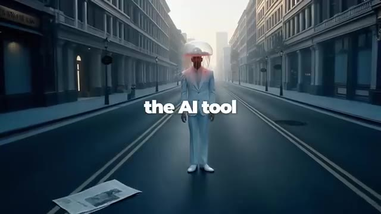
🔍 Agrandir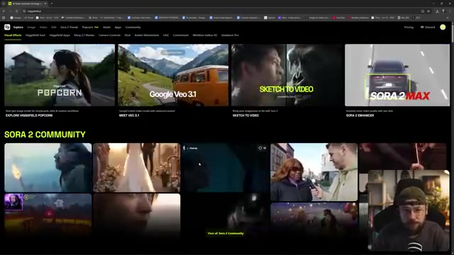
🔍 Agrandirbannière pour Higgsfield Popcorn. Si nous cliquons ici, nous pouvons entrer dans l'outil. Maintenant, nous avons abordé cela dans l'intro, mais pendant très longtemps, l'un des plus grands problèmes lorsqu'il s'agit d'utiliser des outils d'IA pour la réalisation de films et la publicité est d'atteindre un niveau de cohérence. Et nous ne parlons pas seulement de garder les personnages cohérents, nous parlons de choses comme le lieu, l'heure de la journée, l'éclairage et même le style général de ce que vous essayez de créer. Si l'un de ces éléments est un tout petit peu décalé, cela brise vraiment l'illusion. Bien sûr, Google est sorti
Interface & Outils : Navigateur web affichant l'interface de l'outil de génération vidéo Higgsfield Popcorn (higgsfield.ai/popcorn), avec la webcam du créateur en incrustation (PiP).
Contenu textuel & Code : Le site affiche le titre "CREATE VISUAL STORIES WITH HIGGSFIELD POPCORN", un bouton "Storyboard Mode", un espace de prévisualisation vidéo, et un panneau de saisie en bas avec l'option "Generate". De nombreux onglets sont ouverts dans le navigateur (YouTube, outils IA, etc.).
Action / Démonstration : Le créateur présente la page d'accueil et l'interface de l'outil Higgsfield Popcorn tout en expliquant les défis de la cohérence dans la génération vidéo par IA.
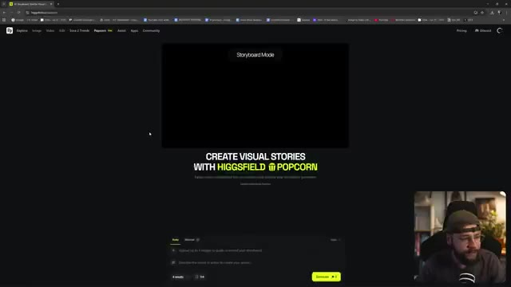
🔍 Agrandiravec nano banana et cela a vraiment changé la donne et ce qu'on examine vraiment aujourd'hui c'est la version de Higgsfield sur cette même idée ils s'attaquent complètement à google avec celle-ci et bravo à eux. Alors comment cela fonctionne-t-il exactement ? Eh bien, si vous regardez au bas de l'écran ici, vous pouvez voir que nous avons l'option de télécharger jusqu'à quatre images pour guider ou étendre notre storyboard.
Interface & Outils : Interface web de Higgsfield Popcorn montrant l'outil de création de storyboard par IA.
Contenu textuel & Code : Texte principal : « CREATE VISUAL STORIES WITH HIGGSFIELD POPCORN ». Options visibles : « Auto », « Manual », « Upload up to 4 images to guide or extend your storyboard », « Describe the mood or action to create your scenes », sélecteur de format 3:4 et bouton jaune « Generate for Free ».
Action / Démonstration : Le curseur de la souris survole la zone d'interface de Higgsfield Popcorn pour montrer les options de téléchargement d'images et de génération de storyboard, tandis que le créateur commente en direct dans l'encadré PiP.
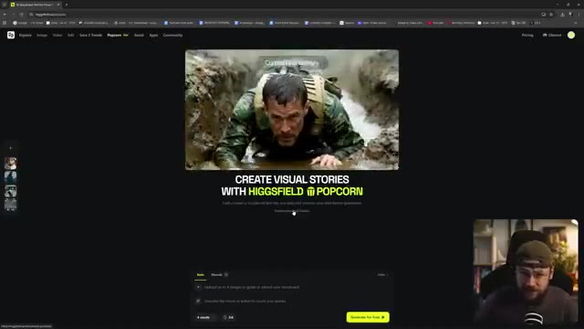
🔍 Agrandir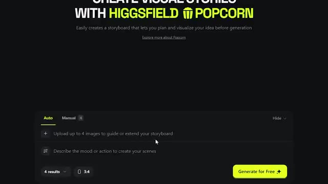
🔍 AgrandirEt en bas, une zone pour saisir notre invite textuelle, qui indique de décrire l'ambiance ou l'action pour créer vos scènes. En bas ici, nous pouvons également indiquer combien d'images nous voulons générer. Et nous pouvons même sélectionner le format d'image de notre sortie. Et vous pouvez également voir qu'il y a une option tout en haut ici pour automatique et manuel. La différence avec le manuel est que nous pouvons entrer une invite textuelle spécifique pour chaque génération individuelle. Je pense donc que pour commencer, essayons simplement l'automatique, un processus très simple et nous deviendrons un peu plus compliqués au fur et à mesure. Donc pour notre premier
Interface & Outils : Interface web de Higgsfield Popcorn (outil de création de récits visuels et de storyboards par IA).
Contenu textuel & Code : Textes visibles : "CREATE VISUAL STORIES WITH HIGGSFIELD POPCORN", options "Auto" et "Manual", champs de saisie pour décrire les scènes ("describe the mood or action to create your scenes"), sélecteur de résultats ("4 results"), bouton "Generate for Free", et menu déroulant "Aspect ratio" avec les formats 3:4, 2:3, 3:2, 9:16, 1:1, 4:3, 16:9.
Action / Démonstration : Le créateur présente l'interface de Higgsfield Popcorn en bas de l'écran, navigue dans le menu des formats d'image (aspect ratio) et bascule entre le mode automatique (Auto) et le mode manuel (Manual) pour la génération de scènes.
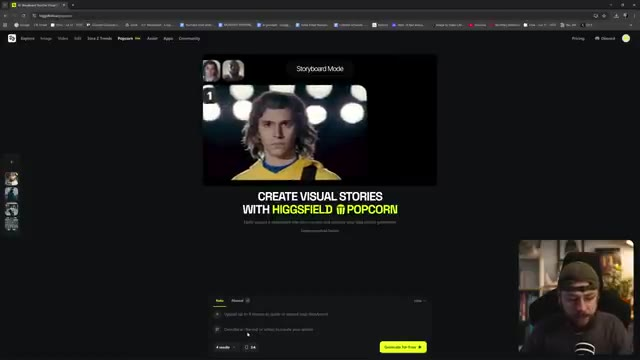
🔍 Agrandir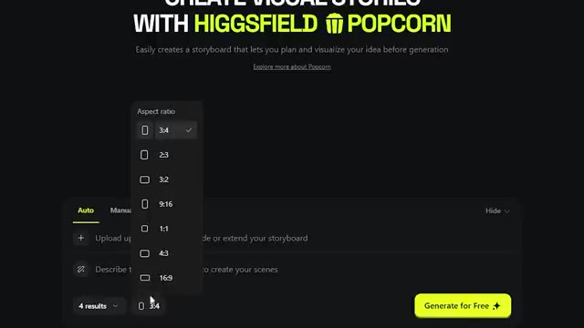
🔍 Agrandir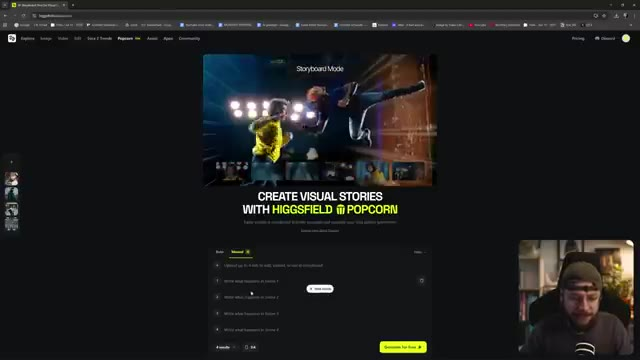
🔍 Agrandirtest je pense que j'aimerais importer dans ceci l'image que j'ai créée de moi en personnage façon Studio Ghibli. Donc on va simplement faire un glisser-déposer de celle-ci dans le champ. Bien sûr, nous avons l'option de télécharger plus d'images si nous voulons avoir plus de références, mais je vais juste m'en tenir à celle-ci pour commencer et en ce qui concerne le texte du prompt, je veux juste opter pour quelque chose de très simple, nous allons juste dire montrer le personnage barbu dans une variété de scènes visuellement saisissantes, dynamiques et cinématiques, montons carrément jusqu'à sept résultats, assurons-nous d'être sur un format 16 par 9 et
Interface & Outils : Interface web de l'outil de génération de storyboards vidéo "Higgsfield Popcorn" avec incrustation vidéo (PiP) du créateur.
Contenu textuel & Code : Texte visible à l'écran : "CREATE VISUAL STORIES WITH HIGGSFIELD POPCORN", champ de prompt avec le texte "Show the bearded character in a variety of visually striking scenes, dynamic and cinematic", réglage de nombre de résultats réglé sur "7 results" et format d'image "16:9".
Action / Démonstration : Le créateur présente l'image générée de son avatar Ghibli, puis navigue sur l'interface de Higgsfield Popcorn pour importer l'image et configurer les paramètres du prompt textuel.
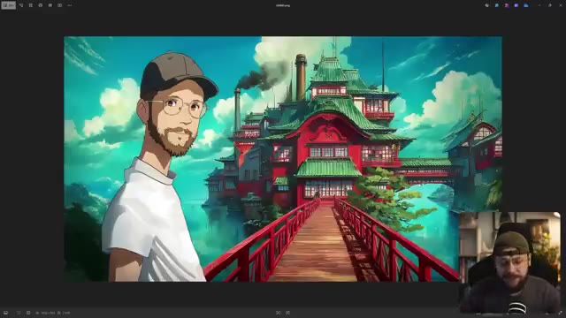
🔍 Agrandir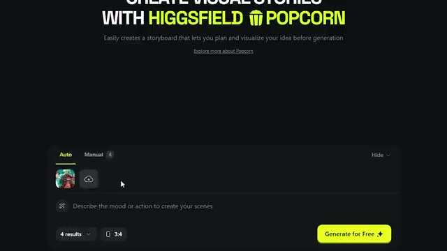
🔍 Agrandir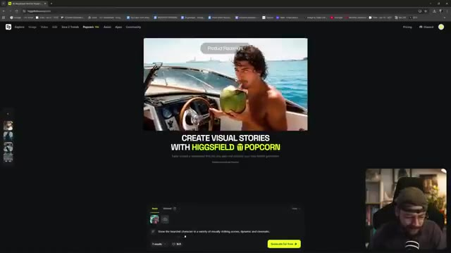
🔍 Agrandirallez-y et générez gratuitement vous pouvez voir que nous avons une certaine quantité de crédits quotidiens pour une utilisation gratuite d'accord donc nous avons récupéré nos huit générations ici de Higgsfield Popcorn deux d'entre elles ont été bloquées en raison de l'affichage de contenu sensible évidemment je n'aurais demandé aucun contenu sensible dans les invites textuelles mais vous savez les gars l'IA a parfois ce genre de problèmes ce n'est pas grave parce que nous avons récupéré cinq très belles générations en commençant par celle-ci vous pouvez voir que le style artistique semble très cohérent. Si nous revenons en arrière vers notre image de référence originale,
Interface & Outils : Interface web de Higgsfield Popcorn, avec un affichage en grille des générations vidéo/image et un encadré PiP du créateur en bas à droite.
Contenu textuel & Code : Texte affiché : "Create visual stories with Higgsfield Popcorn", "Storyboard Mode", et dans les blocs bloqués "Sensitive content". Le prompt visible dans la barre de saisie est : "Show the bearded character in a variety of visually striking scenes, dynamic and cinematic."
Action / Démonstration : Le créateur montre sa galerie de résultats sur Higgsfield Popcorn, explique que certaines générations ont été bloquées pour contenu sensible, puis clique pour afficher l'image de référence originale.
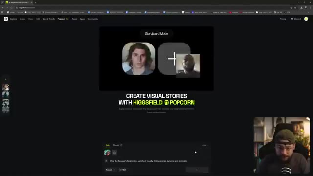
🔍 Agrandir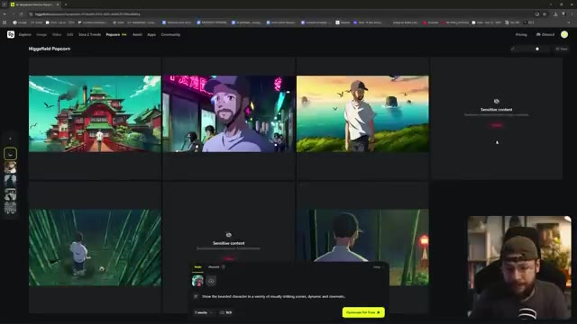
🔍 Agrandir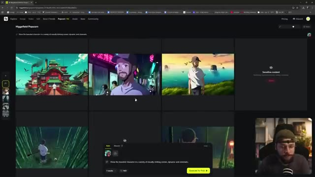
🔍 Agrandir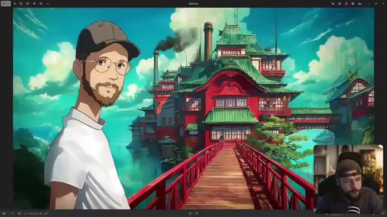
🔍 Agrandirsi je suis hypercritique, je dirais que le type de lunettes a un peu changé. Vraiment, tout le reste a l'air plutôt solide. Cette image ici encore est vraiment, vraiment belle. Et j'adore cette chevelure de moi dans l'eau. C'est cool que Higgsfield semble avoir une sorte de compréhension du sujet dans notre image de référence. Genre, ces images qu'on a obtenues, on a vraiment l'impression qu'elles seraient parfaitement à leur place dans un film du Studio Ghibli. Et dans cette image ici, on me voit marcher en direction de la maison des bains du Voyage de Chihiro, qui bien sûr était l'originale.
Interface & Outils : Interface du lecteur web Higgsfield Popcorn et visionneuse d'images avec affichage en incrustation (PiP) du créateur Jack dans son studio.
Contenu textuel & Code : Interface web de Higgsfield Popcorn affichant des vidéos générées par IA au format 16:9, avec des panneaux latéraux montrant des détails et métadonnées sur les générations.
Action / Démonstration : Le présentateur commente différentes images et clips vidéo générés par IA en style anime, en analysant les détails visuels et la fidélité par rapport à l'image de référence.
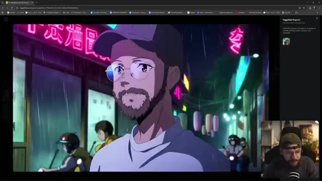
🔍 Agrandir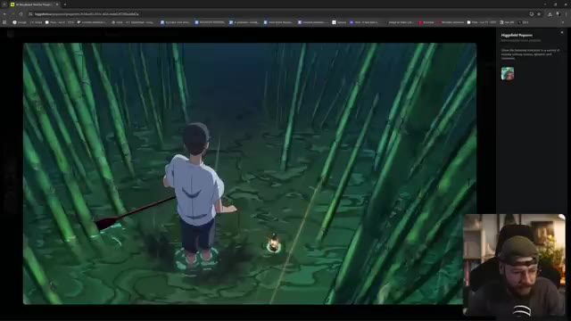
🔍 Agrandir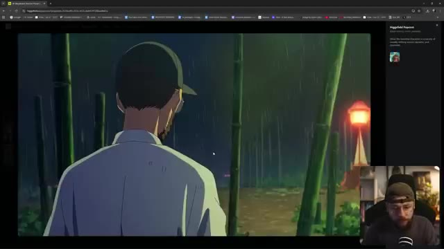
🔍 Agrandirinspiration pour cette image ici dans laquelle je me suis inséré. Maintenant, si nous sommes satisfaits de l'une des images que nous avons obtenues de Higgsfield Popcorn, nous pouvons aller sur ces trois points dans le coin supérieur droit et cliquer sur animer. Et vous verrez maintenant que nous sommes passés à la zone de génération vidéo et que notre image de référence a été insérée dans ce champ. Je vais juste entrer un prompt textuel assez basique. Je vais dire : mouvement de caméra travelling avant lent à hauteur d'homme alors qu'il pleut sur une rue animée de Tokyo, et nous allons juste ajouter à la fin animation de style Studio Ghibli. Dans ce
Interface & Outils : Interface web de la plateforme Higgsfield Popcorn.
Contenu textuel & Code : Texte du prompt visible : 'slow dolly camera move in the man's size as it rains busy Tokyo street Studio Ghibli style animation.', paramètres du modèle (Sora 2 Pro Max, durée 12s, résolution 720p, format d'image 16:9).
Action / Démonstration : Le curseur clique sur le bouton d'animation, puis l'écran bascule vers la zone de génération vidéo avec l'image de référence chargée et la saisie d'un prompt textuel.
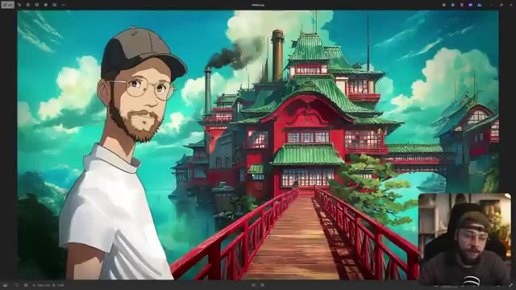
🔍 Agrandir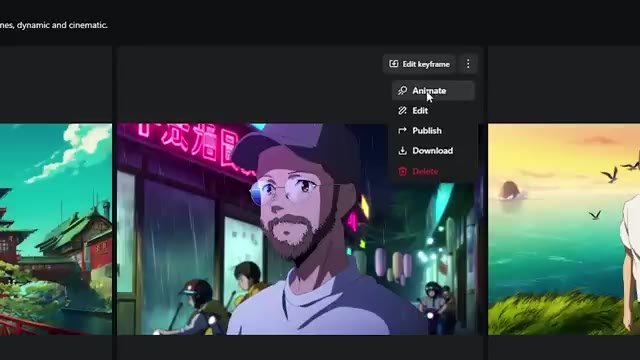
🔍 Agrandir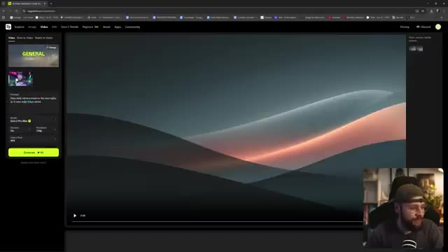
🔍 Agrandirprochain domaine nous pouvons aller de l'avant et choisir notre modèle vidéo et vous pouvez voir qu'il y a beaucoup de choix ici sur Hicksfield. Je pense que nous allons utiliser Google VO 3.1. En utilisant spécifiquement le modèle rapide, nous allons mettre notre qualité à 1080p et notre format d'image à 16 par 9 et cliquer sur générer. Très bien, nous avons récupéré notre génération VO 3.1, allons voir ça.
Interface & Outils : Navigateur web sur la plateforme de création vidéo par IA Higgsfield (interface sombre avec panneaux de configuration à gauche).
Contenu textuel & Code : Modèles visibles : Google Veo 3.1, Kling, Minimax, Sora. Paramètres configurés : Modèle Google Veo 3.1 Fast, Qualité 1080p, Ratio 16:9, Prompt : "Slow dolly camera move in, the man sighs, as it rains, busy Tokyo street. Studio Ghibli style animation."
Action / Démonstration : Le créateur navigue dans le menu déroulant des modèles, sélectionne Google Veo 3.1 Fast, configure la qualité en 1080p et le format en 16:9, clique sur "Generate", puis visionne le résultat vidéo généré.
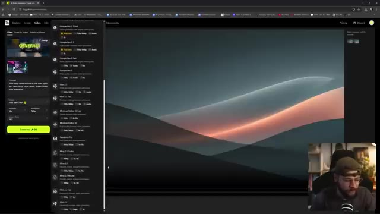
🔍 Agrandir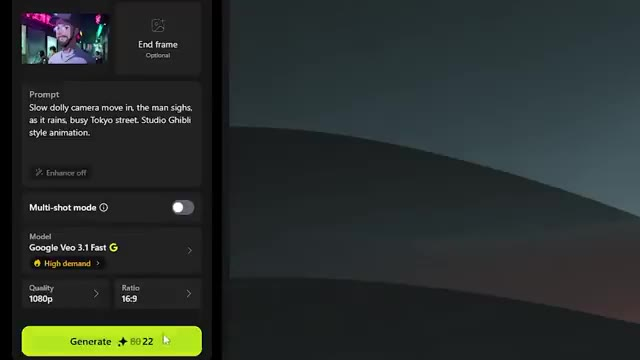
🔍 Agrandir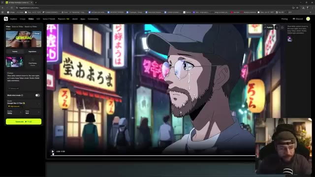
🔍 AgrandirC'est absolument parfait, le style d'animation est pile poil ce qu'il faut et j'adore ce petit morceau de musique à la fin, ça s'intégrerait vraiment parfaitement dans un film du Studio Ghibli et j'espère que vous commencez à voir comment cela fonctionnerait dans un flux de travail. Nous utiliserions Higgsfield Popcorn pour créer de multiples scènes différentes. Bien sûr, en gardant notre personnage et notre lieu, des choses comme ça cohérentes. Et ensuite, nous pouvons aller de l'avant et animer chacune de ces scènes individuelles. Mettez le tout ensemble et vous obtenez facilement un court-métrage ou une publicité. On va passer à quelque chose d'un peu plus
Interface & Outils : Interface web de Higgsfield Popcorn avec panneau de configuration à gauche (paramètres de modèle, prompt, qualité 1080p, format 16:9) et fenêtre vidéo principale, avec incrustation vidéo de l'auteur en bas à droite.
Contenu textuel & Code : Texte visible dans le champ de prompt : "Slow dolly camera move in, the man sighs as it rains, busy Tokyo street, Studio Ghibli style animation." Paramètres du modèle : Google Veo 3.1 fast, Quality 1080p, Ratio 16:9.
Action / Démonstration : Le créateur montre l'interface de génération vidéo de Higgsfield Popcorn avec un rendu animé style Ghibli, puis passe à l'affichage d'une photo de référence pour une nouvelle scène.
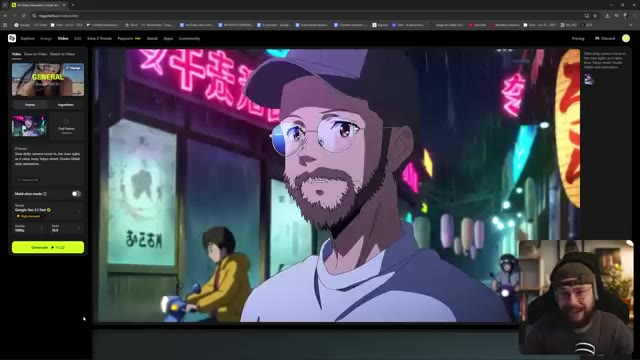
🔍 Agrandir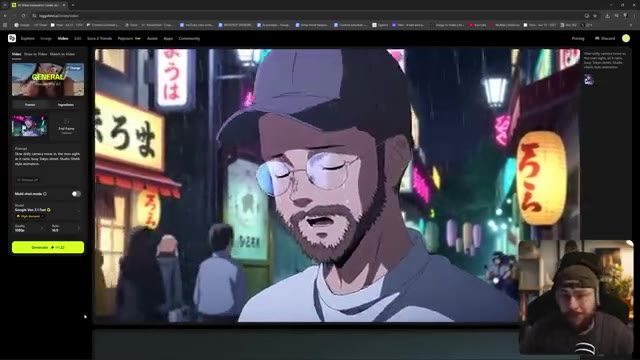
🔍 Agrandirréaliste maintenant. Nous avons cette image de moi dans un coupe-vent Nike debout devant cette fontaine. Un style assez urbain ici. Donc nous allons continuer et glisser-déposer ceci ici. Poussons le modèle un peu plus loin cette fois avec le prompt textuel montrer l'homme barbu en train de commettre un braquage de banque. Encore une fois, c'est un prompt très basique, nous donnons donc pas mal de marge à Higgsfield Popcorn pour exprimer sa propre liberté créative ici. Allons-y et cliquons sur générer. Le modèle va-t-il être capable de me garder beau et cohérent ? Nous avons vu que pour le style Studio Ghibli, il a fait du assez bon travail. Évidemment, cela va être complètement différent. Ceci
Interface & Outils : Interface web de Higgsfield Popcorn (mode Popcorn / Storyboard).
Contenu textuel & Code : Texte affiché : "CREATE VISUAL STORIES WITH HIGGSFIELD POPCORN", "Easily creates a storyboard that lets you plan and visualize your idea before generation", et le prompt textuel : "Show the bearded man carrying out a bank robbery.". Paramètres visibles : modes "Auto" / "Manual", sélecteur "7 results", format "16:9", et le bouton jaune "Generate for Free".
Action / Démonstration : Le créateur montre l'image de référence de lui-même, puis bascule sur l'interface de Higgsfield Popcorn pour taper un nouveau prompt ("Show the bearded man carrying out a bank robbery") et s'apprête à lancer la génération.
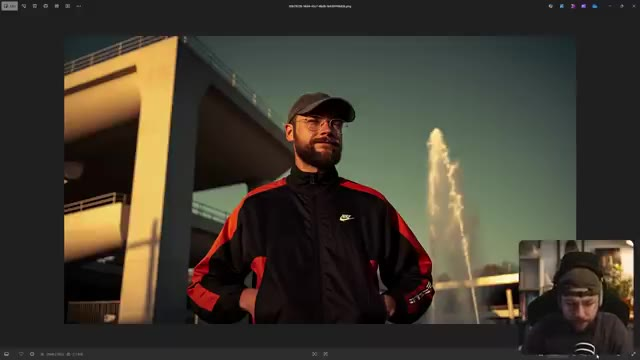
🔍 Agrandir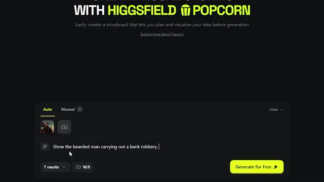
🔍 Agrandir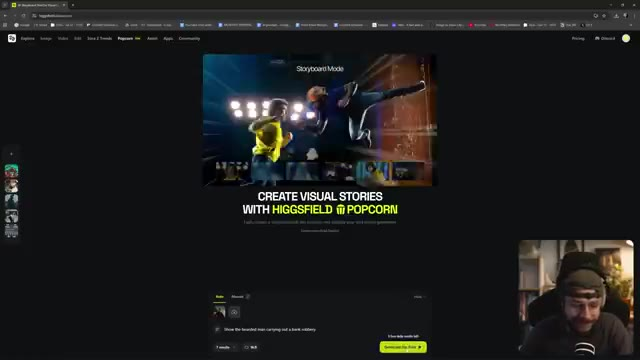
🔍 AgrandirLe style est beaucoup moins indulgent. Donc nous allons devoir aller voir comment le modèle d'image s'en sort. D'accord, donc nous avons nos générations de braquage de banque et je dois dire qu'elles ont l'air plutôt bien. En commençant par ce plan ici, ouais, qui a l'air plutôt sympa. Un peu indulgent avec tous les flous de mouvement et tout ça, et quelques problèmes avec l'écriture sur la porte, je dirais. Mais je ne remettrais pas trop en question le fait que cela me ressemble. Plan en contre-plongée ici, encore une fois, cela me ressemble, je pense. Plutôt satisfait de la cohérence des personnages que nous avons obtenue. Et bien sûr, le costume que je porte
Interface & Outils : Navigateur web affichant l'interface de l'outil de génération vidéo par IA "Higgsfield Popcorn" avec une grille de résultats et une fenêtre PiP du créateur.
Contenu textuel & Code : Texte visible dans l'interface : "Higgsfield Popcorn", le prompt "Show the bearded man carrying out a bank robbery", et les vignettes de prévisualisation des vidéos générées.
Action / Démonstration : Le créateur navigue et commente une série de vidéos générées par IA représentant un braquage de banque, en évaluant la cohérence des plans et des personnages.
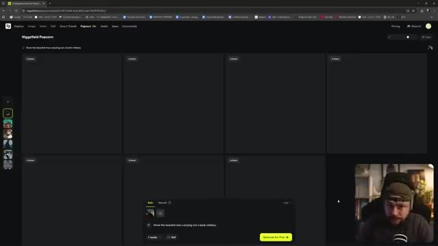
🔍 Agrandir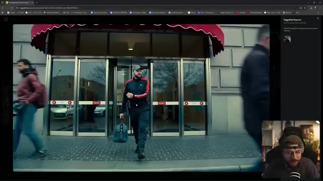
🔍 AgrandirÇa a l'air bien et cohérent aussi. Moi qui entre dans ce coffre-fort ici. Encore une fois, c'est assez indulgent sous cet angle de caméra, mais ça ne brise pas l'illusion, ce qui est vraiment ce qui nous inquiète, bien sûr, quand il s'agit de cohérence. Belle prise ici. Ouais, j'aime beaucoup celle-là, en fait. Et cette prise ici, vraiment belle aussi. L'une des choses que je dirai, c'est que ça semble avoir réussi à m'avoir toujours avec mon alliance, ce qui est plutôt cool, vous pouvez voir qu'elle apparaît dans chacune de nos générations d'images, mais cette prise ici, mon visage a un peu changé.
Interface & Outils : Navigateur web avec lecteur vidéo intégré (style Higgsfield Popcorn) et encadré PiP (Picture-in-Picture) du créateur en bas à droite.
Contenu textuel & Code : Texte visible sur les portes du coffre-fort : "VAULT ACCES", et numéros sur les casiers : "201227".
Action / Démonstration : Le créateur commente la cohérence visuelle d'une vidéo générée par IA montrant un personnage entrant dans un coffre-fort et manipulant un sac.
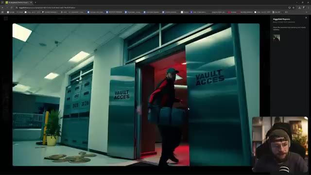
🔍 Agrandir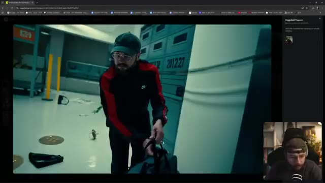
🔍 Agrandir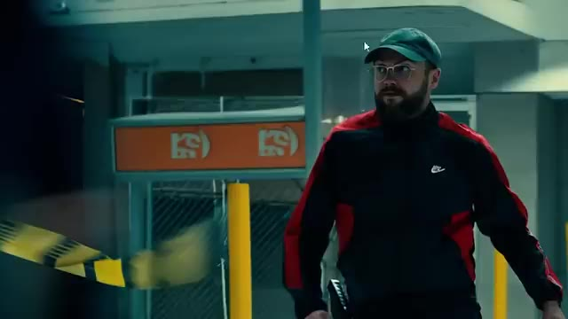
🔍 Agrandirbancal je pense que tout le reste a l'air et se sent plutôt bien et puis ce dernier plan ici ce genre de plan large qui est très cinématique et dramatique ouais j'aime bien ça donc j'espère que vous pouvez voir comment cela fonctionne de manière assez efficace comme outil de storyboarding et nous pouvons aller de l'avant et animer n'importe quelle image dont nous aimons l'apparence. Mais je pense que pour notre prochain exemple, nous allons entrer un peu plus dans les détails et avoir un peu plus de contrôle sur les images que nous allons demander à Higgsfield Popcorn de générer pour nous. Nous allons donc utiliser ChatGPT ici pour nous aider un peu.
Interface & Outils : Interface web de Higgsfield Popcorn (plateforme de génération de vidéos et de storyboards par IA) et navigateur Google Chrome.
Contenu textuel & Code : Textes visibles : "Higgsfield Popcorn", "Storyboard Mode", "CREATE VISUAL STORIES WITH HIGGSFIELD POPCORN", prompt "Show the bearded man carrying out a bank robbery".
Action / Démonstration : Le créateur navigue sur l'interface de Higgsfield Popcorn, montre des plans générés, passe par le mode Storyboard, puis ouvre une nouvelle page de navigateur pour accéder à ChatGPT.
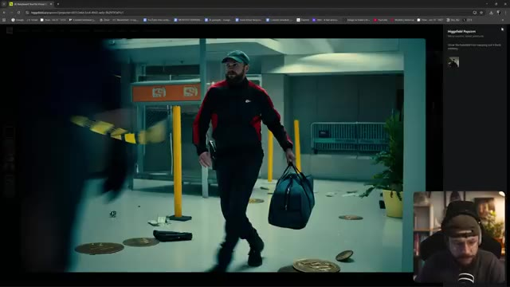
🔍 Agrandir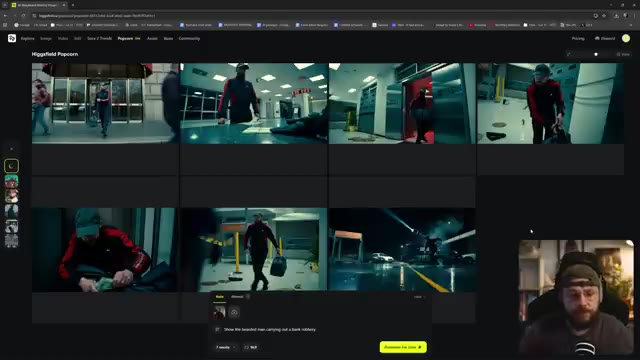
🔍 Agrandir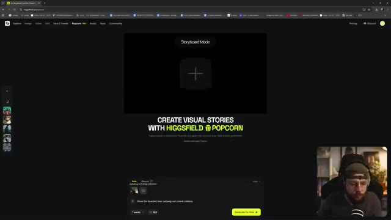
🔍 Agrandir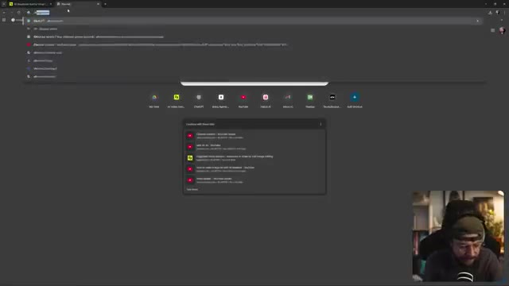
🔍 AgrandirDonc je vais simplement entrer le texte du prompt. Je travaille sur un court-métrage. J'aimerais que tu m'écrives de courts prompts textuels pour chaque scène, qui montrent tous l'homme barbu en train de réaliser une sorte de cascade folle. Fais en sorte que les cascades soient variées, réalistes mais mémorables. Voyons donc ce que ChatGPT nous donne en retour. Comme vous pouvez le voir, nous avons tout un tas de scènes différentes ici : saut sur un toit, glissade en moto, saut sur un train, pont en feu, tonneaux en voiture, plein d'options différentes. Ce qu'on peut faire, c'est copier l'un de nos prompts textuels, retourner sur Higgsfield Popcorn et télécharger un autre...
Interface & Outils : Interface de ChatGPT (avec la question posée) suivie de l'interface de l'outil vidéo Higgsfield Popcorn, avec une incrustation vidéo du créateur dans le coin inférieur droit.
Contenu textuel & Code : Texte du prompt dans ChatGPT : « I'm working on a short film, I'd like you to write me short text prompts for each scene, which all show the bearded man taking part in some kind of crazy stunt make the stunts varied realistic but memorable ». Sur Higgsfield Popcorn : les titres « CREATE VISUAL STORIES WITH HIGGSFIELD POPCORN » et le champ de saisie en bas.
Action / Démonstration : Le créateur montre la saisie de son prompt textuel dans ChatGPT, puis bascule sur l'interface de l'outil vidéo Higgsfield Popcorn pour continuer sa démonstration.
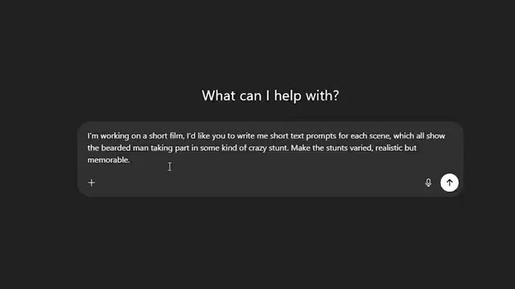
🔍 Agrandir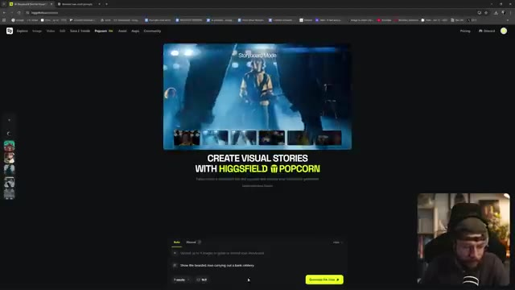
🔍 Agrandirimage de référence cette fois-ci. Je veux aller de l'avant et utiliser celle-ci ici qui a en fait été générée en utilisant Nano Banana. Nous allons donc glisser-déposer ceci dans le champ. Je vais basculer sur l'option manuelle maintenant et cela va évidemment nous permettre de dicter chaque scène individuelle donc je vais copier et coller ce premier prompt textuel ici et nous allons simplement continuer à prendre les prompts dont le son nous plaît juste pour continuer à peupler chacune de nos scènes individuelles. Il faut opter pour la marche sur l'aile d'avion, pourquoi pas la chute de la cascade ici, debout au bord d'une cascade massive, il plonge.
Interface & Outils : Interface web d'un générateur vidéo IA avec panneau latéral et prévisualisation d'image, puis interface ChatGPT pour les prompts.
Contenu textuel & Code : Texte affiché : "Show the bearded man carrying out a bank robbery", champs de scènes numérotés de 1 à 7, et liste de prompts de cascades incluant "The Waterfall Drop" sur ChatGPT.
Action / Démonstration : Le créateur sélectionne et copie des prompts textuels pour les intégrer dans les différentes scènes du mode manuel de l'outil de génération vidéo.
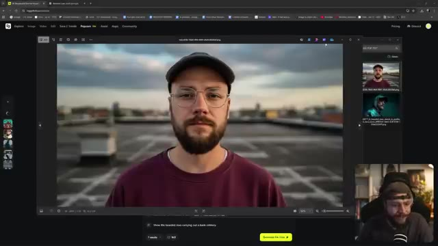
🔍 Agrandir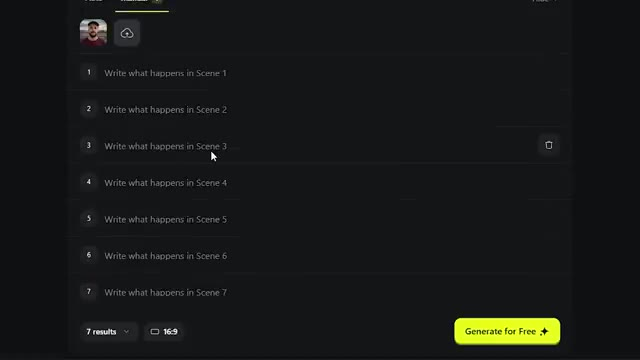
🔍 Agrandir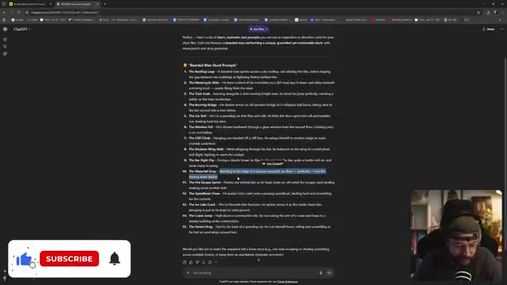
🔍 Agrandirparfaitement dans l'eau rugissante en contrebas, comme le son de ça bien sûr, nous voulons toujours que nos images soient générées en 16 par 9. Allons voir ce qu'on obtient en retour. Nous avons donc nos générations de retour, encore une fois juste un rappel, c'était notre image de départ et c'est ce qu'on a obtenu de Higgsfield Popcorn. Donc le pont en train de brûler n'a pas beaucoup de sens physique, je cours un peu au milieu, je ne sais pas trop ce qui se passe ici. J'aime bien ce plan où je cours le long du train, ça a l'air plutôt cool. Encore une fois, la tenue que je porte est jolie.
Interface & Outils : Navigateur web affichant l'interface de Higgsfield Popcorn avec le mode Storyboard et l'affichage des différentes scènes.
Contenu textuel & Code : Textes des prompts de scènes numérotées, notamment le prompt numéro 2 : "Running alongside a slow-moving freight train, he times his jump perfectly, catching a ladder as the train accelerates".
Action / Démonstration : Le créateur navigue et commente les différentes scènes générées par IA sur Higgsfield Popcorn, analysant la cohérence physique des mouvements (le pont en feu et la course le long du train).
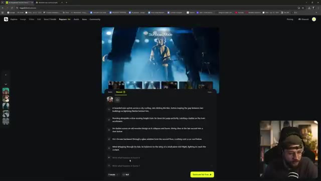
🔍 Agrandir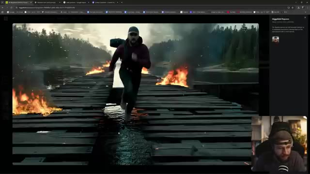
🔍 Agrandiret cohérent et ça m'a en fait mis un sac à dos. Nous n'avions pas cela dans l'image de référence originale, mais je suppose que Higgsfield se dit, eh bien, il réalise une sorte de cascade, alors peut-être qu'il a besoin d'un équipement tactique ou autre. Donc celui-ci, c'est là où je suis sur l'aile d'un avion. Je ne suis pas trop sûr de pourquoi je me retrouve avec une queue de cheval, mais le reste du plan a l'air plutôt bien. J'ai ici en train de plonger d'une cascade. Ça a l'air cool. Une composition de style assez joliment cinématographique. Moi courant à travers le lac a l'air bien aussi. De dos,
Interface & Outils : Navigateur web affichant la plateforme de génération vidéo Higgsfield Popcorn, avec une vue en incrustation (PiP) du créateur en bas à droite.
Contenu textuel & Code : Panneau latéral droit affichant le titre "Higgsfield Popcorn" ainsi que des descriptions textuelles et des prompts de génération pour chaque plan de cascade.
Action / Démonstration : Le créateur commente les différentes vidéos générées par IA affichées à l'écran, illustrant les ajouts inattendus (sac à dos, équipement) réalisés par Higgsfield à partir de l'image de référence.
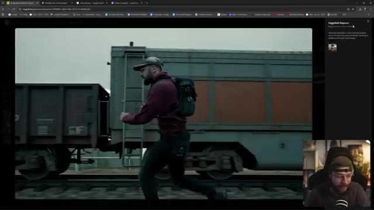
🔍 AgrandirJe trouve que l'apparence reste bien cohérente. Sauter entre deux toits ici encore, on voit que la construction du monde physique est un peu bancale. Ça n'a pas beaucoup de sens. Je vais sauter et on dirait que je suis en train de tomber de ce toit. Mais en termes de cohérence des personnages, je pense qu'on a encore une fois réussi. Et celui-ci, c'est moi qui tombe de la fenêtre.
Interface & Outils : Navigateur web affichant l'application Higgfield Popcorn avec un panneau latéral de prompts et de détails, et une incrustation vidéo (PiP) du créateur en bas à droite.
Contenu textuel & Code : Le panneau latéral affiche des descriptions textuelles des scènes générées par IA (par exemple, saut entre deux bâtiments, chute à travers une vitre).
Action / Démonstration : Le navigateur présente le rendu vidéo d'une IA générative illustrant un saut de toit puis une chute à travers une fenêtre, tandis que le créateur commente les incohérences physiques et la cohérence du personnage.
Je crois que j'ai encore une queue-de-cheval. Je ne sais pas pourquoi ce modèle d'image veut vraiment que j'aie une queue-de-cheval. Je pense que la prochaine étape, j'aimerais tester ça pour un cas d'usage publicitaire. Je vais me débarrasser de cette image de référence là. Et je veux en mettre quelques nouvelles maintenant. Utilisons donc celle-ci, qui a une ambiance de mode éditorial de magazine. Je glisse-dépose ceci ici. Et je veux aussi glisser-déposer cette image ici d'une bouteille de parfum pour homme Ralph Lauren. Donc on va la déposer. Et en ce qui concerne le texte du prompt, nous allons procéder
Interface & Outils : Interface web de Higgsfield Popcorn (higgsfield.ai/popcorn) avec un panneau de prompt textuel et des options de storyboard.
Contenu textuel & Code : Le site web affiche le titre "CREATE VISUAL STORIES WITH HIGGSFIELD POPCORN" avec des aperçus de storyboards et un champ de texte de prompt en bas.
Action / Démonstration : Le créateur démontre l'interface de Higgsfield Popcorn et présente les résultats de génération vidéo avec une vue sur l'écran et son retour caméra en PiP.
et écrivez dans l'émission montrant l'homme barbu dans une variété d'environnements différents, portant des vêtements différents, tenant le flacon de parfum Ralph Lauren. Ambiance de mode éditoriale visuellement saisissante, publicité de parfum TV cinématique. Alors générons ceci. D'accord, nous avons donc un tas de résultats différents ici. J'ai fait un prompt textuel légèrement modifié tout en haut ici, essayant de m'assurer que je portais toujours ma chapeau parce que j'avais l'impression que ces générations ici ne me ressemblaient pas complètement.
Interface & Outils : Navigateur web affichant l'application de génération vidéo/storyboard "Higgsfield Popcorn" avec interface sombre et boutons de génération.
Contenu textuel & Code : Texte du prompt visible : "Show the bearded man in a variety of different environments, wearing different clothing holding the Ralph Lauren perfume bottle. Visually striking, editorial fashion vibe, TV perfume ad, cinematic." Paramètres : 6 résultats, format 16:9.
Action / Démonstration : Le créateur montre l'interface de génération de storyboards sur Higgsfield Popcorn puis présente les différents résultats obtenus à l'écran.
Mais pour être franc, sur l'image de référence, je porte un chapeau, je porte mes lunettes. Donc parfois il est important d'inclure cela dans le prompt textuel, c'est pourquoi je voulais l'exécuter deux fois. D'abord, avec un prompt textuel très simple et celui-ci avec plus de description quant à ce que je porte. Nous avons définitivement obtenu des images très visuelles ici de Higgsfield popcorn et vous pouvez voir que le produit lui-même est resté bien cohérent tout au long. Si nous faisons un peu défiler vers le haut, vous allez me voir avec une coiffure plaquée ridicule. Je ne sais pas pourquoi l'image de Higgsfield
Interface & Outils : Navigateur web affichant l'interface de Higgsfield Popcorn, avec le créateur visible en incrustation (PiP) dans le coin inférieur droit.
Contenu textuel & Code : Texte du prompt visible : "Show the bearded man in a variety of different environments, wearing different clothing holding the Ralph Lauren perfume bottle. He has a short, well-groomed dark brown beard and moustache with a soft, dense texture, trimmed neatly around the edges..."
Action / Démonstration : Le créateur navigue et zoome sur les différentes images générées par l'outil d'IA Higgsfield Popcorn pour analyser la cohérence du personnage et du produit.
Le modèle déteste mes cheveux. Plus tôt, il a essayé de me faire une queue de cheval, maintenant il me donne ce peigne, je ne sais pas ce que c'est. Une horrible coupe avec raie sur le côté. Mais cela mis à part, c'est une image IA assez impressionnante, je dois l'admettre. J'aime vraiment celle-ci aussi. Tu vois, parfois le modèle d'image a un peu de mal avec le texte, d'après ce qu'on peut voir. On peut voir une sorte d'effet d'artefact étrange qui se produit ici, presque comme des hiéroglyphes ou quelque chose du genre. Mais la pose que je prends, celle-ci me ressemble vraiment et c'est probablement parce que le gars porte un chapeau,
Interface & Outils : Navigateur web affichant une plateforme de génération d'images/vidéos par IA (Higgfield Popcorn) avec volet de prompt textuel à droite et incrustation vidéo de la webcam du créateur (PiP) en bas à droite.
Contenu textuel & Code : Texte du prompt visible dans le panneau latéral droit de Higgfield Popcorn décrivant le personnage : "Give the handsome man in a variety of different environments, wearing different clothing, holding the Ralph Lauren perfume bottle. He has a short, well-groomed dark brown beard and moustache with a soft, dense texture..." ainsi que des artefacts textuels illisibles sur la veste imitant des hiéroglyphes.
Action / Démonstration : Le navigateur présente différentes variations d'une génération vidéo/image publicitaire pour un parfum Ralph Lauren, tandis que le créateur commente les détails visuels et les artefacts du modèle.
c'est ça ? Si vous utilisez une image de référence où votre personnage porte un chapeau, vous avez vraiment besoin que les images générées le fassent aussi porter un chapeau. Parce que tout de suite, cela me ressemble beaucoup plus que quelque chose comme ça où, vous savez, les cheveux. Encore une fois, cependant, si je n'avais pas cette coiffure, cela me ressemblerait beaucoup. C'est un autre plan vraiment superbe. Celui-ci serait tout à fait à sa place dans une publicité de parfum. Même celui-ci a l'air vraiment super.
Interface & Outils : Navigateur web affichant la plateforme Higgfield Popcorn, avec un panneau latéral de texte descriptif et un panneau de prévisualisation vidéo. En bas à droite, petite fenêtre vidéo (PiP) du créateur.
Contenu textuel & Code : Texte descriptif visible dans le panneau latéral droit sur Higgfield Popcorn détaillant les différents environnements et tenues du personnage (Ralph Lauren parfum). Texte dans l'interface et fenêtres de sélection d'applications visibles à l'écran 1.
Action / Démonstration : Le créateur navigue à travers différents exemples de vidéos générées par IA sur la plateforme Higgfield Popcorn, illustrant l'impact des références vestimentaires (chapeau, coiffure) sur la ressemblance du personnage.
Une autre super image ici. J'aime vraiment beaucoup la variété des tenues ainsi que des décors. Et je pense sincèrement que c'est le point fort des modèles d'image de Higgsfield. Ils sont clairement orientés vers la mode ou les ambiances éditoriales. Et en fait, j'ai réalisé quelques tests en utilisant cette même image de référence, en essayant simplement de voir ce prompt textuel très simple afficher à nouveau l'homme barbu dans différents environnements et vous pouvez voir ici que je suis resté assez cohérent tout du long, ça a l'air plutôt pas mal et ce plan-ci particulièrement, je...
Interface & Outils : Application web Higgsfield (Popcorn / modèles d'image) avec navigation par onglets (Explore, Image, Video, Edit, Scene 2 Trends, Popcorn, etc.), barre de prompt en bas avec le texte de génération et paramètres, et incrustation vidéo PiP du créateur.
Contenu textuel & Code : Texte du prompt visible en bas : "Show the bearded man in a variety of different environments, wearing different clothing holding the Ralph Lauren perfume bottle. He has a short, well-groomed dark brown beard and moustache with a soft, dense texture." Paramètres 4 results, 16:9.
Action / Démonstration : Le navigateur web affiche la plateforme Higgsfield Popcorn avec une grille de résultats d'images générées par IA basées sur une image de référence et un prompt textuel cohérent.
J'adore comment ça a mis de la neige dans ma barbe, c'est vraiment très sympa aussi au niveau de la composition, c'est une super génération, et ensuite moi dans une ville, ça essaie de me donner une petite coupe mulet, et là-haut moi tenant ce pop-corn dans différents environnements, c'est super bien réussi aussi. J'adore le détail dans la barbe où on dirait que je ne me suis pas rasé depuis un petit moment.
Interface & Outils : Navigateur web affichant la plateforme Higgsfield AI avec lecteur vidéo central et encadré PiP (Picture-in-Picture) de la webcam du créateur.
Contenu textuel & Code : URL visible dans la barre d'adresse, titre "Higgsfield Popcorn" dans le panneau latéral droit, interface de relecture vidéo avec barre de progression.
Action / Démonstration : Le créateur présente ses résultats de génération vidéo par IA dans différents environnements (montagne enneigée, paysage urbain) et commente les détails visuels.
Et il y a un tout petit peu de croissance là, sous l'encolure. Et cette sorte de ville de chalets en rondins derrière moi. Celle-ci est vraiment très sympa aussi. Moi sur la plage, toujours en train de tenir le popcorn, ayant l'air un peu triste et tout seul. Je pense que ce qu'on va faire pour l'image finale. Essayons ce genre d'ambiance style Pixar que nous avons ici.
Interface & Outils : Navigateur web affichant l'interface de l'outil de génération vidéo Higgfield et un lecteur de visionnage d'images, avec une incrustation vidéo (PiP) du créateur en bas à droite.
Contenu textuel & Code : Sur l'image 2 : Interface Higgfield avec le titre « Higgfield Popcorn », une grille de 7 vidéos générées montrant le personnage dans divers décors urbains, naturels et intérieurs, et une boîte de prompt active en bas. Sur l'image 3 : Fichier image affiché en plein écran avec un prompt de génération textuel visible en haut (« c7d446977_full_body_image_of_a_man_mood_remote_house... »).
Action / Démonstration : Le créateur navigue et présente ses différentes générations vidéo et d'images IA sur son écran, tout en commentant les styles visuels et les environnements.
Donc je vais glisser-déposer ça dedans. Et ensuite je me suis dit, pourquoi ne pas avoir la version Pixar de moi tenant ce gobelet de café à emporter Starbucks ? Essayons quelque chose d'un peu différent ici. Disons de montrer une scène de combat entre l'homme barbu et un robot géant.
Interface & Outils : Interface web de Higgsfield AI (Popcorn) affichée dans un navigateur, combinée avec l'explorateur de fichiers Windows, avec un encadré PiP (Picture-in-Picture) de Jack dans le coin inférieur droit.
Contenu textuel & Code : Sur Higgsfield AI (Popcorn) : texte "CREATE VISUAL STORIES WITH HIGGSFIELD POPCORN", onglets "Storyboard Mode", champ de saisie de prompt "Describe the scene to be read to animate your scenes", et boutons de génération. Dans l'explorateur de fichiers : dossiers de téléchargement et images miniatures (telle qu'une image de gobelet Starbucks et un flacon de parfum).
Action / Démonstration : Le créateur navigue dans l'explorateur de fichiers pour sélectionner un fichier image et le glisser-déposer dans l'interface de génération vidéo de Higgsfield AI, puis s'apprête à saisir un nouveau prompt textuel.
L'homme barbu tient toujours son café Starbucks, essayant de ne pas le renverser pendant le combat. Très bien. Voyons ce qu'on obtient pour celui-ci. Je serai curieux de voir s'il parvient à maintenir ce style artistique Pixar cohérent et à l'appliquer également à notre gobelet de café Starbucks.
Interface & Outils : Interface web de Higgsfield Popcorn (higgsfield.ai/popcorn) avec barre de navigation supérieure, un grand visuel central "Storyboard Mode" et le créateur visible en incrustation vidéo (PiP) dans le coin inférieur droit.
Contenu textuel & Code : Titre "CREATE VISUAL STORIES WITH HIGGSFIELD POPCORN", onglets "Tools", zone de texte de prompt en bas ("Show a fight scene between the bearded man and a giant robot..."), boutons de génération et paramètres de format vidéo (16:9).
Action / Démonstration : Le créateur navigue sur l'interface de Higgsfield Popcorn et s'apprête à lancer la génération d'une nouvelle vidéo basée sur le prompt du combat avec l'homme barbu et son café.
Très bien, donc nous retrouvons nos générations de moi essayant en quelque sorte d'éviter, pour être honnête, de combattre ce robot géant. Et comme vous pouvez le voir, mon personnage est resté bien cohérent du début à la fin. Et je tiens, bien sûr, ce gobelet de café Starbucks. Nous avons eu une génération ici qui a échoué en raison d'un contenu sensible.
Interface & Outils : Navigateur web affichant l'interface de l'outil de génération vidéo IA Higgsfield Popcorn, avec une caméra PiP du créateur (Jack) en bas à droite.
Contenu textuel & Code : Texte de prompt visible dans la fenêtre de génération : « Show a fight scene between the bearded man and a giant robot. The bearded man is always holding his Starbucks coffee, trying not to spill it, during the fight. » et une vignette bloquée par un avertissement « Sensitive content ».
Action / Démonstration : Le créateur navigue et commente ses différentes générations de vidéos IA sur Higgsfield Popcorn, mettant en avant la cohérence de son personnage et le gobelet de café.
Juste un petit bug, celui-là. Je suis sûr qu'ils finiront par corriger ça. Mais vous pouvez voir que le robot est resté bien cohérent tout au long de tous ces plans également. Je ne sais pas trop ce qui se passe avec celui-ci, mais je pense que de manière générale, nous atteignons ce bon niveau de cohérence pour le personnage et, dans ce cas, pour le produit également. Et bien sûr, nous aurions aussi pu emprunter la voie manuelle ici et dicter chacune des scènes individuelles que nous recherchions.
Interface & Outils : Interface web de la plateforme de génération vidéo par IA « Higgsfield Popcorn » avec options Auto/Manual et onglets de navigation.
Contenu textuel & Code : Texte visible dans le panneau de prompt : « Show a fight scene between the bearded man and a giant robot. The bearded man is always holding his Starbucks coffee, trying not to spill it, during the fight. ». En mode manuel, des scripts numérotés de 1 à 6 décrivent des actions (ex: « A bearded man sprints across a city rooftop... »). Paramètres visibles : 6 results, format 16:9, bouton « Generate ».
Action / Démonstration : Le créateur navigue à travers l'interface de Higgsfield Popcorn, examine les différentes vidéos générées dans la grille de résultats, zoome sur un plan spécifique, puis bascule sur le mode manuel pour montrer la configuration détaillée des scènes.
Donc je pense que d'après nos tests, nous avons vu que Higgsville popcorn s'en sort vraiment bien lorsqu'il s'agit de contenu de style animé ou de dessin animé. Et comme je l'avais prédit, le contenu de style mode ou éditorial également. C'est là que les modèles d'image de Higgsfield brillent vraiment et vous pouvez en voir la preuve ici.
Interface & Outils : Navigateur web affichant l'interface de la plateforme Higgsfield Popcorn, avec une vue en grille des vidéos générées, une barre de navigation supérieure et une zone de prompt en bas. Le créateur est visible en incrustation vidéo (PiP) en bas à droite.
Contenu textuel & Code : Texte du prompt visible en bas : "A bearded man sprints across a city rooftop, rain slicking the tiles, before leaping the gap between two buildings as lightning flashes behind him." Paramètres de génération avec le modèle Higgsfield.
Action / Démonstration : Le présentateur parle en pointant ou commentant les résultats visuels présentés sur la grille de l'interface Higgsfield Popcorn à l'écran.
Dieu merci, dans celui-ci au moins je porte mon bonnet et je cache cette affreuse calvitie. Je ne veux plus jamais voir ça. Ça va me donner des cauchemars. Mais je suis sûr que vous pouvez voir un grand nombre de cas d'utilisation pour cet outil. J'aimerais beaucoup avoir votre avis également. Comment pensez-vous qu'il se compare à la concurrence chez Nano Banana ? Si vous avez apprécié le contenu d'aujourd'hui les gars, assurez-vous de lâcher un pouce bleu pour moi, pensez à vous abonner et bien sûr activez la cloche de notification pour ne jamais rater de futures publications. J'apprécie tout le soutien sur toutes mes vidéos récentes les gars et je vous retrouve dans la prochaine.
Interface & Outils : Higgsfield Popcorn (plateforme de génération de vidéo par IA)
Contenu textuel & Code : Texte du prompt visible : "Show the bearded man in a variety of different environments, wearing different clothing holding the Ralph Lauren pochiche bottle. Visually striking, national fashion vibe. TV perfume ad cinematic." et un autre prompt en bas : "A bearded man sprints across a city rooftop, raw clicking the tiles, before roping the gap between two buildings as lightning flashes behind him."
Action / Démonstration : Le navigateur web affiche l'interface de Higgsfield Popcorn avec des résultats de générations de vidéos mettant en scène le même personnage dans divers contextes publicitaires.